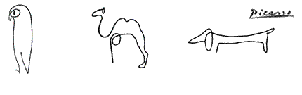

Tim Menzies
timm@ieee.org
IEEE Fellow
prof (full), cs, ncstate, usa
SE, AI, data mining, prog languages


I find simpler software solutions to seemingly
hard problems.
So what can I simplify for you?
News
- ICSE 2022: 12 talks done, just 7 left to go. Oy vey.
- May 2022: my Ph.d. students start summer work at Amazon, Indeed, Facebook.
- May 9, 2022: Fairware'22 (equitable SE technology) a great success.
- May 6, 2022: just graduated 5 Ph.D. students (a new departmental record).
- April 20, 2022: no, deep learning is not the answer to all our problems.
- April 20, 2022: yes, we can generalize across 100s of SE projects.
- April 1, 2022: fundamental flaw found in 100s of SE analytics papers.
- Mar 20, 2022: invited to be Associate Editor, IEEE TSE.
- Mar 1, 2022: invited to be keynote speaker at ISSRE'22.
- Feb 1, 2022: invited, PC member, ICSE'23.
Interested in Graduate Study?
I seek talented Ph.D. graduate students for AI + SE. Is that you?
Interested in Industrial Research Opportunities?
I work a lot with industry. Ask me how to innovate. On time. On budget.
Read my case studies:
Microsoft;
Grammatech;
NASA;
CSIRO
LexisNexis: 1,2,3,4.5;
IBM:1,2,3,4;
About me

Tim Menzies (IEEE Fellow, Ph.D., UNSW, 1995) is a full Professor in CS at North Carolina State University where he teaches software engineering, automated software engineering, and foundations of software science.
He is the directory of the RAISE lab (real world AI for SE) and
the author of over 280 referred publications. In his career, he has been a lead researcher on projects for NSF, NIJ, DoD, NASA, USDA (funding totalling over 13 million dollars) as well as joint research work with private companies.
Prof. Menzies is the editor-in-chief of the Automated Software Engineering journal and associate editor of IEEE Transactions on Software Engineering (and other leading SE journals).
For more, see his web site http://menzies.us or the text of his IEEE Fellow nomination.
- Awards:
- IEEE Fellow
- Publications:
- H-index: 65 (Apr'22).
- Research students:
-
Ph.D.: 6 current. 18 past.
Masters (by research): 32 - Funding:
-
Total=
$13.1 million (total). From many sources, e.g.:


- Papers:
- 108 journal + 137 conference + 86 other
Author of one of SE's 20-most cited papers (cites/year);
Distinguished paper award, FSE’21
Distinguished paper award, ICSE'19
Most influential paper award, ICSME'19
- Journal work:
-
editor-in-chief: Automated Software Engineering journal
assoc. ed.: CACM, TSE, TOSEM, JSS, EMSE, IST, ASEJ, IEEE Software, SQJ, Big Data Research, IET Software - Conference work:
-
co-general chair: ICMSE'16; RAISE'19, PROMISE'05..'12
co-PC chair: ASE'12, NEIR'15, SSBSE'17, PROMISE'20
artifacts co-chair:ASE'21, ICSE'20, ASE'20, FSE'18, FSE'16
program committees: ICSE'22, IJCAI'22, AAAI'22, ICML'22, MSR'22, ESEM'22, IJCAI'21. AAAI'21, ICSE'21, MSR'21, ASE'20, ICSE'20, ESEM'20, FSE'19, ASE'19, MSR'19, SSBSE, PROMISE,... - Professional work:
- Roving member, IEEE Technical Council on SE. 2022, 2021
- Government work:
-
NASA software research chair: 2002-2004
NSF panelist: 13 times (2003-2020)
IEEE Fellow Nomination (2018)

(With apologies for excess hyperbole...)
Internationally known for revolutionary advances exploring the synergy between artificial intelligence (AI) and software engineering (SE), Dr. Menzies has authored four books and over 260 refereed publications. His publications, with over 9000 citations, have appeared in leading journals and proceedings of prestigious conferences. He has supervised seven students earning PhDs and 23 MS thesis students. Dr. Menzies' distinctive contributions have had enormous impact for SE researchers and practitioners in software quality prediction and software optimization.
SOFTWARE QUALITY PREDICTION
Because software plays a critical role in industry, government, and society itself, improving software quality is critical. In landmark papers in 2006 and 2007, Dr. Menzies was an early pioneer in applying data mining and AI to software quality predictors, introducing a method which identified software modules likely to contain defects. This method had a 71 percent mean probability of defect detection, significantly higher than the code inspections commonly used in software practice.
In his software quality prediction research, Dr. Menzies identified a serious problem: often, the analysis in SE papers is not reproducible because data underlying the analysis is unavailable. To address this problem, Dr. Menzies developed PROMISE, a public data repository of software data, in 2005 publishing a paper introducing PROMISE and co-founding the PROMISE workshop, so successful it became a conference in 2008. Today, the PROMISE repository contains hundreds of data sets used in thousands of papers by researchers around the world.
OPTIMIZATION OF SOFTWARE-INTENSIVE SYSTEMS
Dr. Menzies is a pioneer in applying data miners to optimize software-intensive systems. In 2002, he discovered that analyzing such systems with data miners augmented with genetic algorithms led to faster analysis and better optimizations. Even for systems with millions of configuration options, Dr. Menzies’ optimizers quickly learn how to make code run quicker, make web servers handle more traffic, and compile programs faster. Dr. Menzies' optimizers have been applied at NASA for reasoning about safety-critical aerospace software.
Dr. Menzies has also applied his optimization techniques to understand the unstructured textual components of software artifacts and software research papers. His was one of the earliest successful efforts applying text mining and AI to the notes of software test engineers. By identifying anomalous reports that required a second opinion, he could increase assurance of NASA systems while reducing the overall effort required to achieve that assurance. Recently, he has designed tools that can review 10,000s of papers to learn the structure of the SE scientific community. These tools can guide researchers and practitioners to find relevant work that might otherwise be overlooked.
Dr. Menzies' contributions to SE and AI are widely recognized. For his research, in 2017, Dr. Menzies received the MSR (Mining Software Repositories) Foundational Contribution Award as "Recognition of fundamental contributions in the field of data mining software repositories which helped others advance the state of the art." International databases of scholarly achievement rank Dr. Menzies number three world- wide both in software analytics and in SE and data mining. Recently, Dr. Menzies clustered 35,000 papers from the last 25 years of top-SE journals and conferences. In the "software metrics" cluster, Dr. Menzies is the top-ranked author. In the papers from top-ranked venues, Dr. Menzies' h-index of 48 places him number 11 overall.
Dr. Menzies' contributions have had world-wide impact in software practice. In 2005, Turkish researchers found that when commercial teams restricted code inspections to 25 percent of the files identified by Dr. Menzies' methods, they detected 88 percent of the existing code defects. In 2005, his students commercialized his defect detection methods in the Predictive tool suite, subsequently purchased by companies such as Chevron, Northrop Grumman, LogLogic, Inc., and Compagnie Financière Alcatel, to find code defects. In 2017, the US Software Engineering Institute used Dr. Menzies' optimizers to guide discussions about costly updates to Department of Defense software.
NASA has benefited enormously from Dr. Menzies’ research. In 2005, as science chair at a NASA facility, he received a commendation award from NASA’s Chief of Mission Assurance saying: "...A great researcher in his own right, ...Tim has raised the bar on quality and level of work [expected] from our researchers." NASA used his algorithms in 2008 to find violations in Space Shuttle launch requirements; in 2010, to quickly explore the design of next-generation new Air Traffic Management concepts; and in 2017 to find better monitoring strategies for pilots flying planes in safety-critical situations. In 2016, based on Dr. Menzies' research, NASA's Jet Propulsion Laboratory created the NASA Analogy Software Cost Model as its official tool for predicting software development costs.
Evidence of Technical Accomplishment
Tim Menzies, Jeremy Greenwald, Art Frank, “Data mining static code attributes to learn defect predictors,” IEEE Transactions on Software Engineering, Vol. 33 (1), 2-13, 2007. Dr. Menzies is a pioneer in the development of predictors of software quality learned from data miners. A notable finding of this paper is that Dr. Menzies' methods (including decision trees and Bayesian learning) have a 71 percent mean probability of defect detection--a rate significantly higher than human manual inspections. The paper, with more than 920 Google Scholar citations, is one of the 100 most cited papers in software engineering. Moreover, nine of the 50 most cited papers in the IEEE Transactions on SE (2012-2017) use methods and/or data from the databases used by this paper. Methods for software defect prediction introduced in the paper have been applied commercially around the world. In this paper, Dr. Menzies was the lead researcher —he defined the problem, the technical approach, and designed and coded all of the experiments.
Martin S. Feather and Tim Menzies, "Converging on the optimal attainment of requirements," Proceedings, IEEE Joint International Conference on Requirements Engineering, 2002. Although optimization methods for numerical systems have been used widely, applying these methods is often ineffective in complex software systems where each "if" statement divides the software into regions with different properties. For software, Dr. Menzies found that applying non-numeric optimizers, e.g., simulated annealing or genetic algorithms, is effective. This paper is the first of its kind to reason about solutions to software requirement problems on the Pareto frontier. As witnessed by many papers in the last two years, this method is now widely used by researchers in the software requirements community. For this paper, Dr. Menzies led the AI-part of the research, and designed and implemented the AI algorithm used in the analysis.
Tim Menzies, Andrian Marcus, "Automated severity assessment of software defect reports," IEEE International Conference on Software Maintenance," 2008. This paper, with over 185 citations, describes one of the earliest successful efforts applying text mining methods to the notes of software test engineers. The method introduced in the paper identifies anomalous reports requiring a second opinion, thus increasing software quality assurance while reducing the overall effort required to achieve that assurance. For this work, Dr. Menzies was the lead researcher, defining the overall vision of the paper, as well as building the tools and running all of the experiments.
Natural Language Understanding
- Zhe Yu, Nicholas Kraft, Tim Menzies “Finding Better Active Learners for Faster Literature Reviews”. Empirical SE Journal, to appear 2018. This is the first SE application using incremental text mining methods to learn what a reader wants to read. Dr. Menzies showed that a) supposed state-of-the-art text miners from other domains perform poorly for SE, and b) a new method called FASTREAD can quickly guide researchers and practitioners to relevant work that might otherwise be overlooked. Achieving Generalizability in Software Engineering Research
- Burak Turhan, Tim Menzies, Ayse Basar Bener, Justin S. Di Stefano, "On the relative value of cross-company and within-company data for defect prediction," Empirical SE, vol. 38(6), 1403-1416, 2012. This paper shows that useful models for a project can be built by carefully selecting the most relevant examples from other projects. The paper, with more than 180 citations, is one of the five most cited articles of all time in the Empirical SE journal.
Adjusting Learners to Human Needs
- Abdel Salam Sayyad, Tim Menzies, and Hany Ammar, "On the value of user preferences in search-based software engineering: A case study in software product lines", International Conference on Software Engineering, 2013. This paper (134 citations) shows that while most, but not all, optimizers used in software engineering are highly insensitive to complex sets of user preferences, for complex requirements problems, goal-aware reasoning can achieve much better results than standard optimizers used in software engineering.
- Abdel Salam Sayyad, Joseph Ingram, Tim Menzies, Hany Ammar, "Scalable product line configuration: A straw to break the camel's back". Automated Software Engineering Conference, 2013. This paper (86 citations.), which extends the previous paper, is one of the five most cited papers in the IEEE Automated Software Engineering Conference in the last five years. By exploiting the richness of human preferences, the method introduced in this paper can extract usable designs from a space of thousands of goals and hundreds of thousands of constraints. Learning Using Many Opinions
- E Kocaguneli, Tim Menzies, JW Keung, "On the value of ensemble effort estimation," IEEE Transactions on Software Engineering, Vol. 38(6), 1403-1416, 2012. Even though ensemble techniques are widely applied in other domains, they are rarely used in SE. This paper ( 140 citations) showed that any single predictor was less trustworthy than using twelve elite models implemented from an ensemble of 90 learners.
Uncovering Errors in Data Mining
- Tim Menzies, Alex Dekhtyar, Justin Di Stefano, Jeremy Greenwald, "Problems with precision" IEEE Trans SE, 2007. In this paper (155 citations), Dr. Menzies describes a previously undocumented, subtle, and dangerous aspect of precision in a widely-used performance measure. Curiously, this problem had not been previously reported despite the measure's widespread use.
Better Optimizers Using Data Miners
- Tim Menzies, Zach Milton, Burak Turhan, Bojan Cukic, Yue Jiang, Ayse Basar Bener, "Defect prediction from static code features: Current results, limitations, new approaches". Automated Software Engineering, 2010. This paper (197 citations) introduces "WHICH" a meta-learner framework that can be quickly customized for different business goals. Measured in terms of specific user goals, WHICH performs better that many standard learners. Human-Understandable Data Mining Results
- Tim Menzies, Ying Hu, "Data mining for very busy people", IEEE Computer, Vol. 36(11), 2003. Cognitive scientists and researchers studying human decision-making note that humans often use simple models rather than complex ones. This paper (132 citations) describes Dr. Menzies' TAR2 data miner which generates tiny human-readable models, useful for describing to humans many seemingly complex software engineering problems.